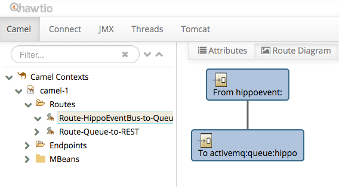
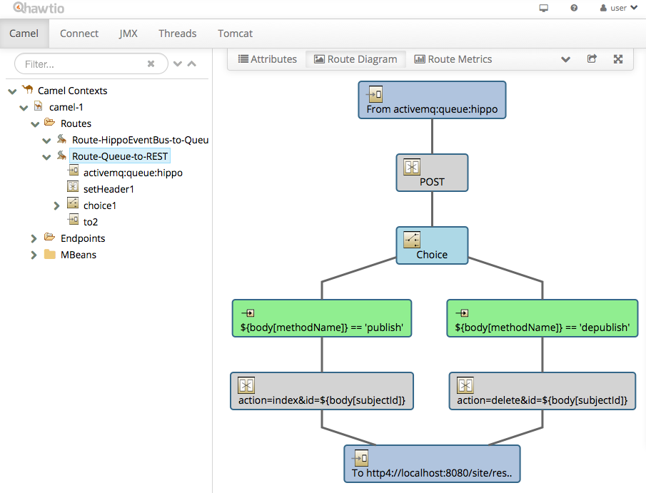
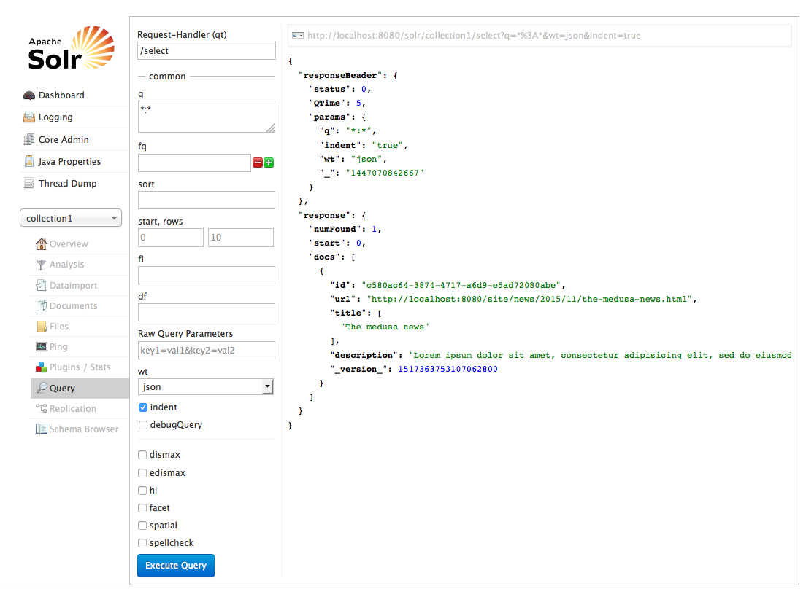
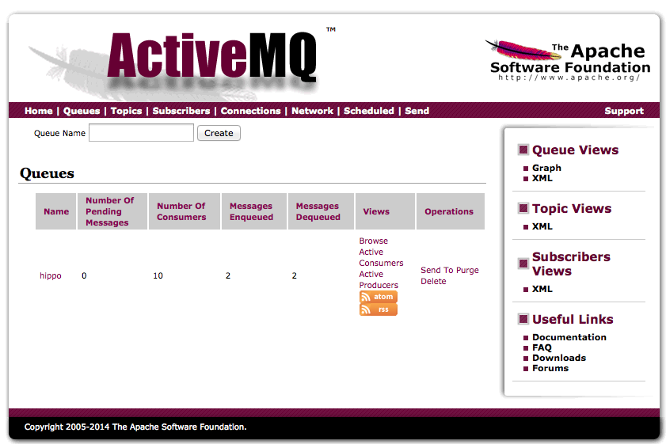

| Route name | Description |
|---|---|
| Route-HippoEventBus-to-Queue | Receives an HippoEventBus event and store it into a file under the inbox folder. |

| Route name | Description |
|---|---|
| Route-Queue-to-Rest | Polls the inbox folder to read a JSON message file and invokes the specified REST service URL. |

To test this scenario, it is required to run Apache Active MQ locally. So, the demo project will be able to demonstrate how a Hippo document workflow publish/depublish event can be delivered as JSON message to a queue in your Apache ActiveMQ server.
The demo project expects the Apache ActiveMQ server running at the default port, 61616, by default.
To install Apache ActiveMQ, please follow the guide in http://activemq.apache.org/getting-started.html. But, here are simplified steps for this demo testing purpose only:
You can build and install the module first with Maven.
$ mvn clean install
To test this scenario with Apache Solr, execute the following in the demo project's root folder:
$ cd demo
$ mvn clean verify
$ mvn -P cargo.run -Dcargo.jvm.args="-Dsearch.engine=solr -Dqueue.mode=activemq"
Note: You should run the Apache Solr separately before running the above command. Follow Demo 1: Solr Search Engine Integration page for detail first.
You can also test the scenario with ElasticSearch integration as well:
$ cd demo
$ mvn clean verify
$ mvn -P cargo.run -Dcargo.jvm.args="-Dsearch.engine=es -Dqueue.mode=activemq"
Note: You should run the ElasticSearch separately before running the above command. Follow Demo 2: ElasticSearch Search Engine Integration page for detail first.
In CMS UI, try to open a published document and take it offline and re-publish the document.

Now, try to search the content in the Search Engine's UIs or tools.

Retry to take a document offline or publish an unpublished document and see those synchronized in the search engines properly.
You can also monitor how ActiveMQ is doing at http://localhost:8161/admin/.

The CamelContext configuration is placed in cms/WEB-INF/camel/routes-with-activemq.xml like the following example which is initiated by org.springframework.web.context.ContextLoaderListener defined in a <listener> element in cms/WEB-INF/web.xml.
<camelContext xmlns="http://camel.apache.org/schema/spring">
<route id="Route-HippoEventBus-to-Queue">
<!-- Subscribe publish/depublish events as JSON from HippoEventBus. -->
<from uri="hippoevent:?category=workflow&action=publish,depublish" />
<!-- Convert the JSON message to String. -->
<convertBodyTo type="java.lang.String" />
<!-- Send the JSON string message to the queue named 'hippo'. -->
<to uri="activemq:queue:hippo" />
</route>
<route id="Route-Queue-to-REST">
<!-- Receive message from the queue named 'hippo'. -->
<from uri="activemq:queue:hippo" />
<!-- Convert the file message to String. -->
<convertBodyTo type="java.lang.String" />
<!-- Convert the JSON string to JSON object. -->
<convertBodyTo type="net.sf.json.JSON" />
<!-- Set HTTP header to 'POST'. -->
<setHeader headerName="CamelHttpMethod">
<constant>POST</constant>
</setHeader>
<!-- Set HTTP query string based on the workflow event message. -->
<choice>
<when>
<simple>${body[action]} == 'publish'</simple>
<setHeader headerName="CamelHttpQuery">
<simple>action=index&id=${body[subjectId]}</simple>
</setHeader>
</when>
<when>
<simple>${body[action]} == 'depublish'</simple>
<setHeader headerName="CamelHttpQuery">
<simple>action=delete&id=${body[subjectId]}</simple>
</setHeader>
</when>
</choice>
<!-- Invoke the Search Index synchronization REST service. -->
<to uri="http4://localhost:8080/site/restapi/{{search.engine}}/update/" />
</route>
</camelContext>